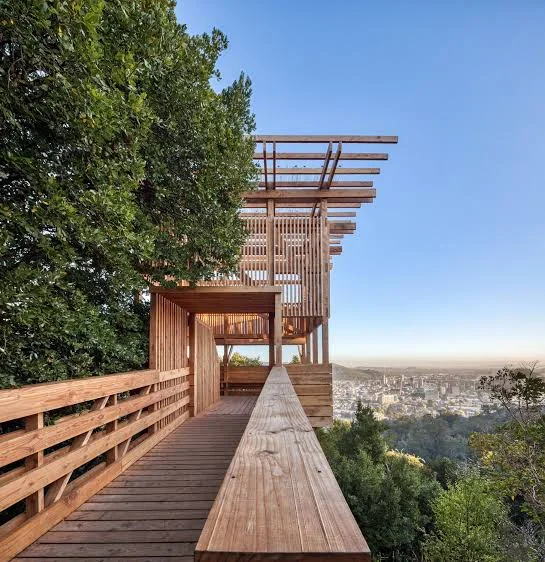
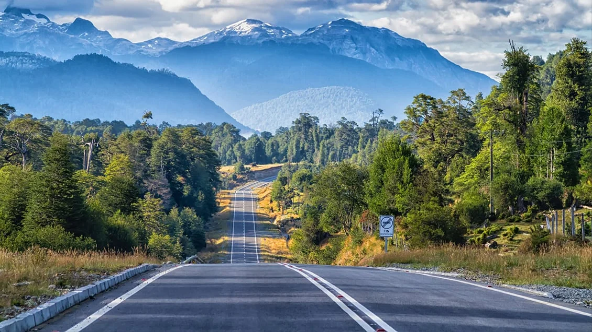
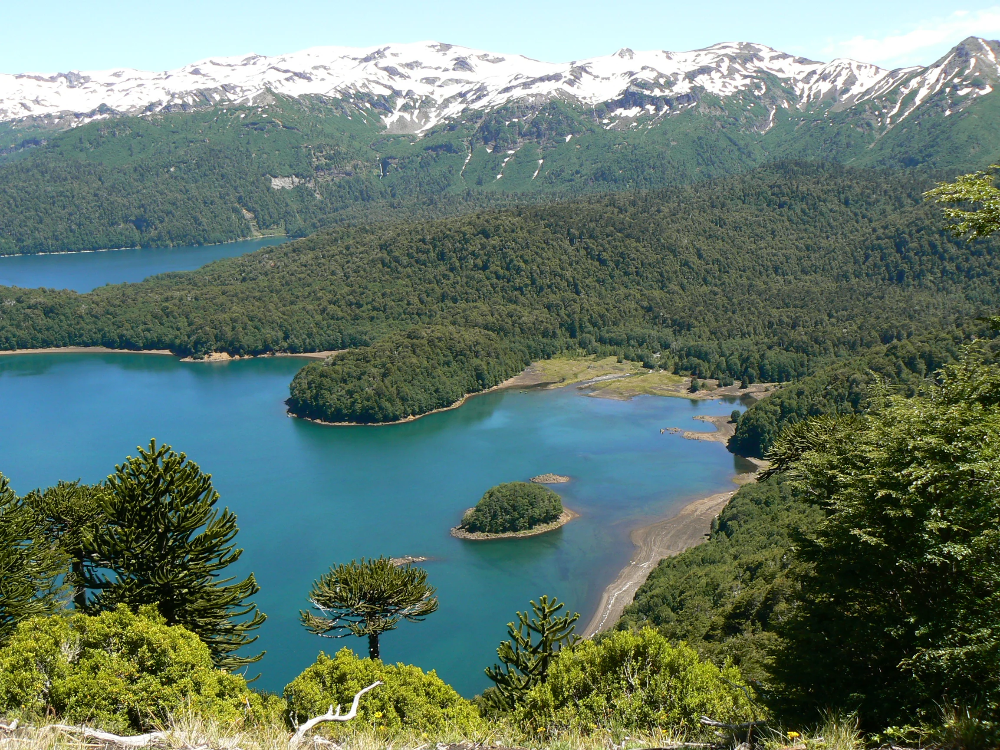
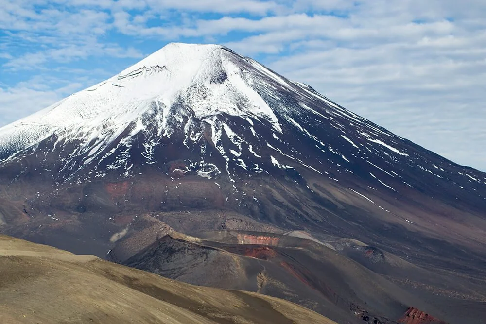
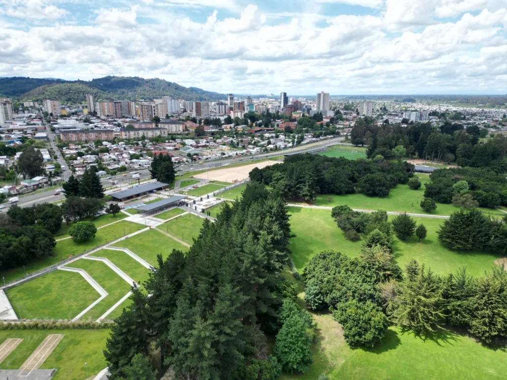
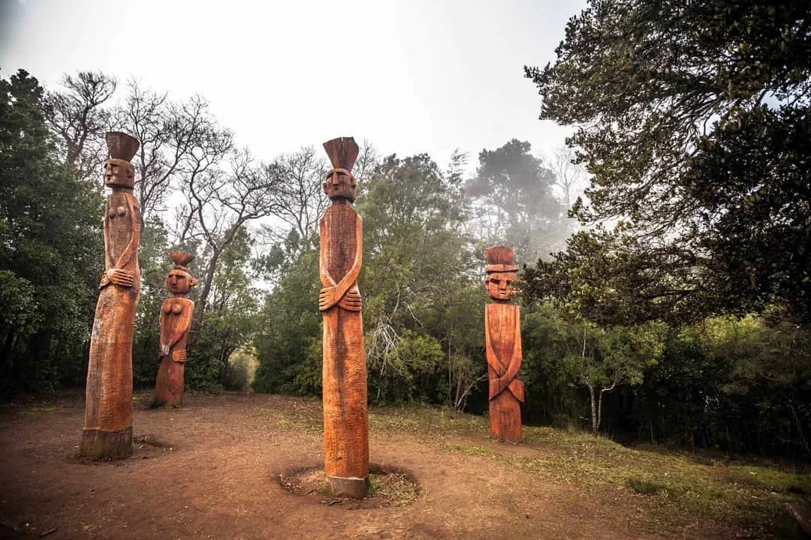
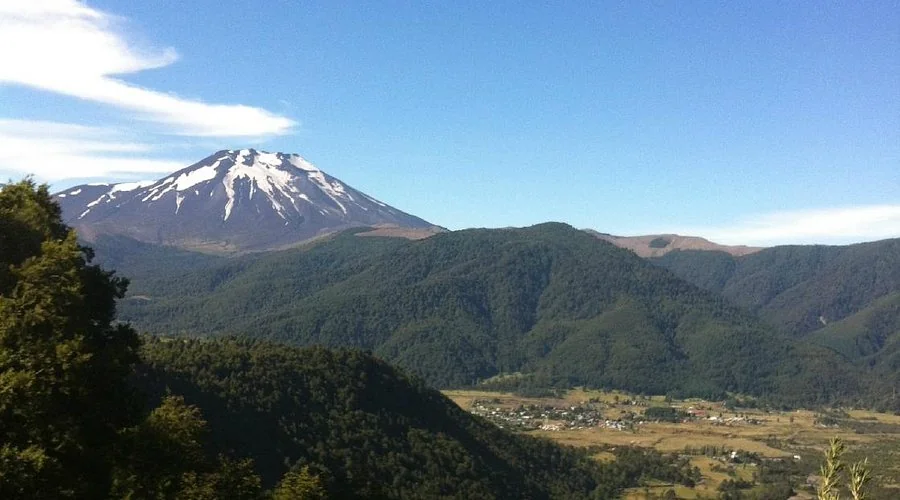

Cerro Ñielol
Admira vistas panorámicas de la ciudad de Temuco desde este impresionante cerro.

Explora los mejores senderos, parques naturales y miradores de la región.
No se encontraron rutas que coincidan con los filtros seleccionados.

Admira vistas panorámicas de la ciudad de Temuco desde este impresionante cerro.

Recorre senderos rodeados de naturaleza y disfruta de vistas panorámicas de la región.

Camina por un sendero ecológico rodeado de flora y fauna nativa.

Disfruta de este espacio verde ideal para caminatas y actividades al aire libre.

Conoce la historia y la cultura de Temuco en este emblemático monumento.

Explora la belleza natural de la Reserva Nacional Malalcahuello, un destino ideal para los amantes de la naturaleza y el senderismo. Disfruta de sus paisajes impresionantes y su rica biodiversidad.